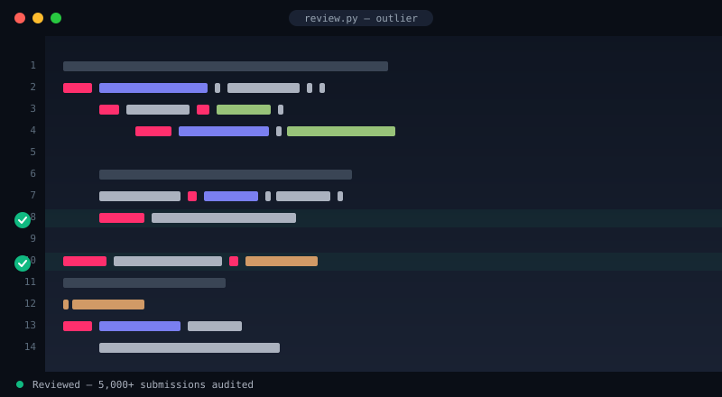

Reviewer, AI Training (Programming & Mathematics)
Run, debug, and fix contributor‑submitted Python, C, C++, and JavaScript code across math, programming, and physics tasks; verify correctness, edge‑case handling, and runtime behaviour before submissions enter the training pipeline. Audited 5,000+ submissions and authored structured feedback that improved contributor consistency and downstream model accuracy.
Python
C / C++
JavaScript
Code review
LLM training data